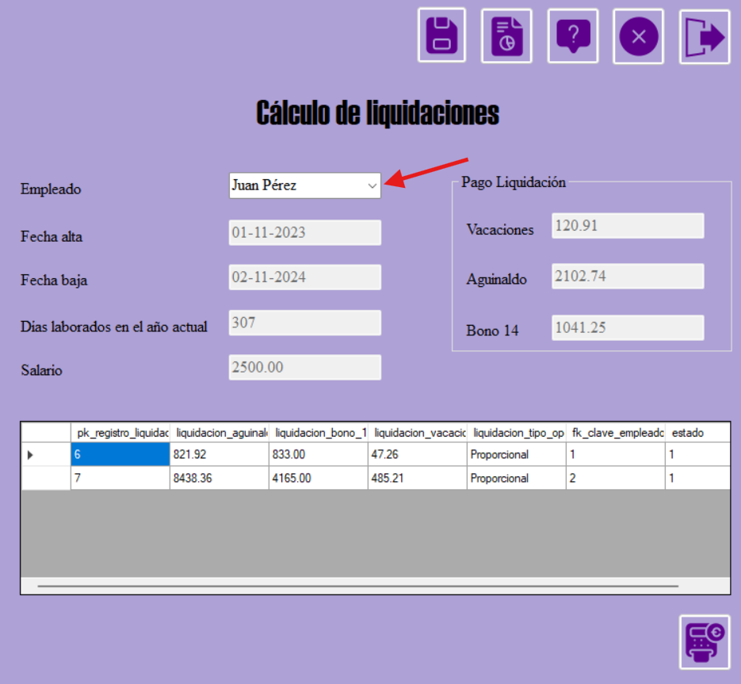
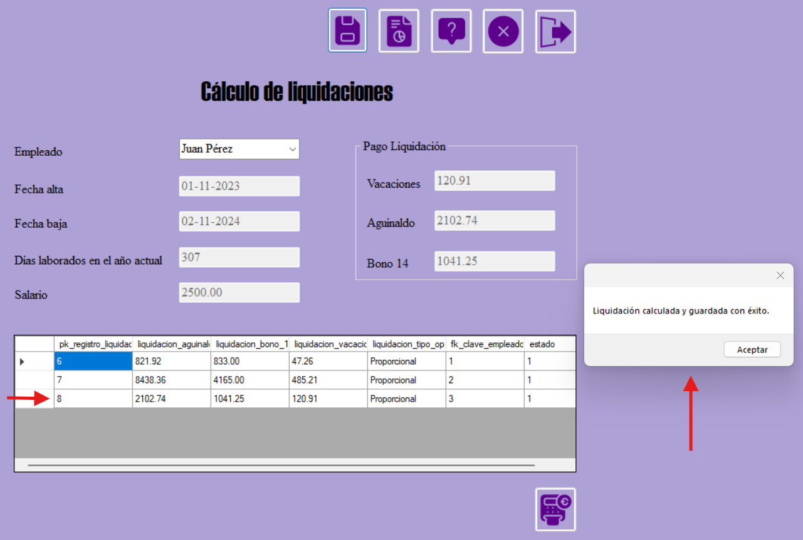
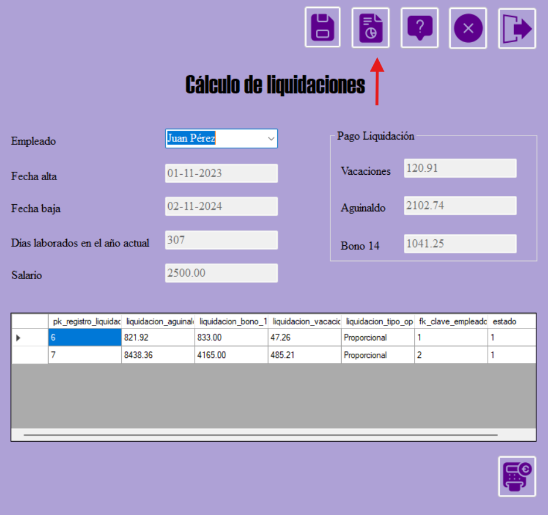
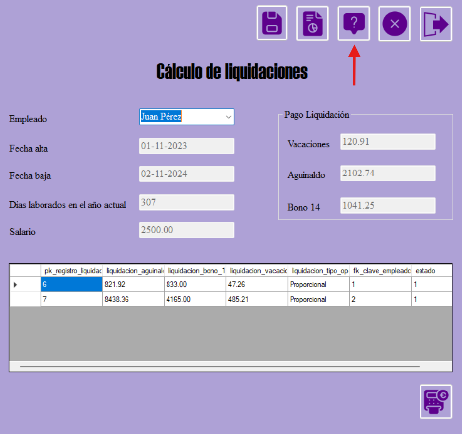
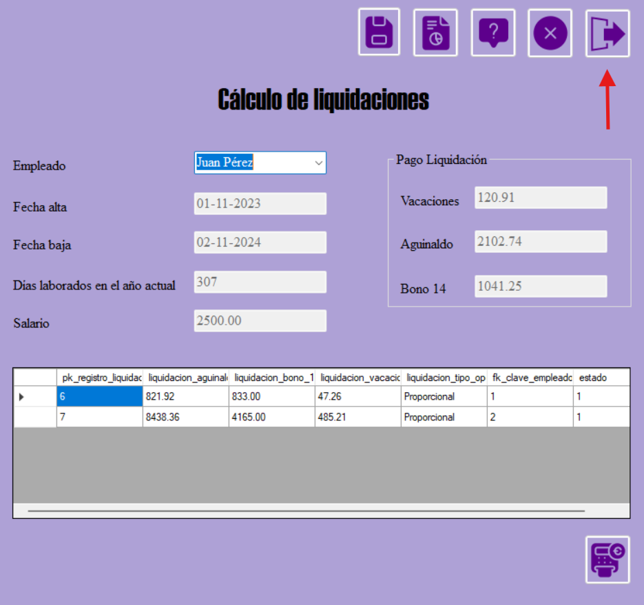
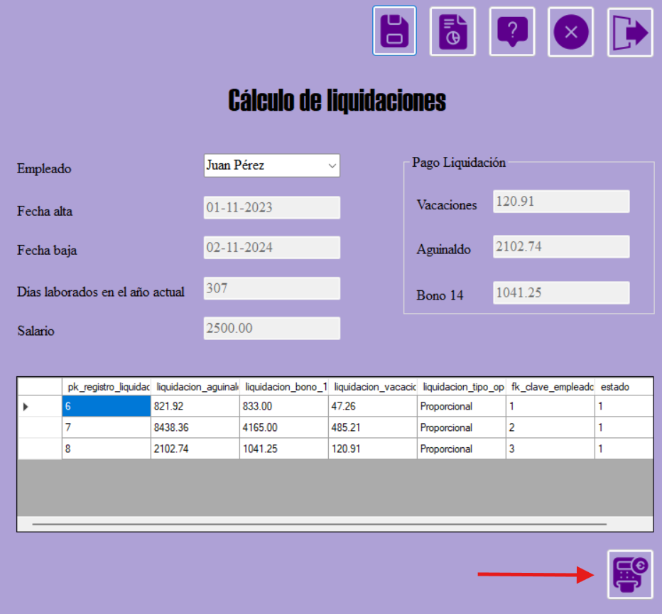
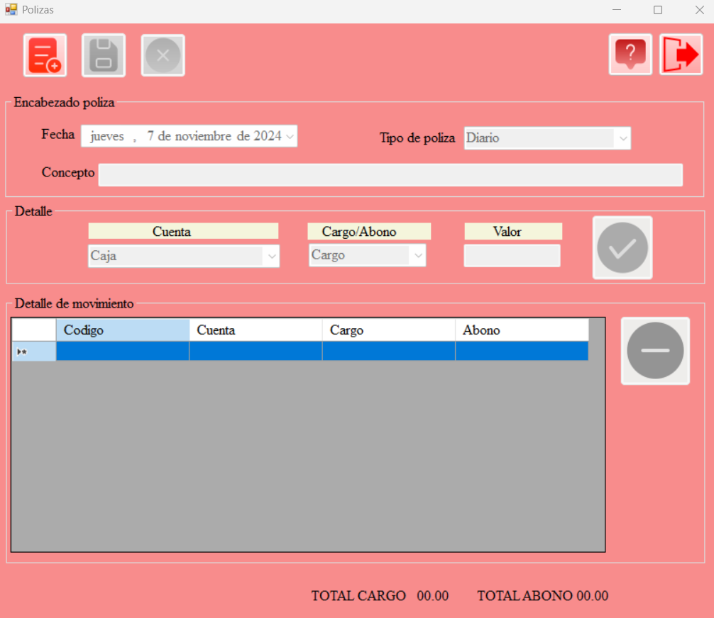
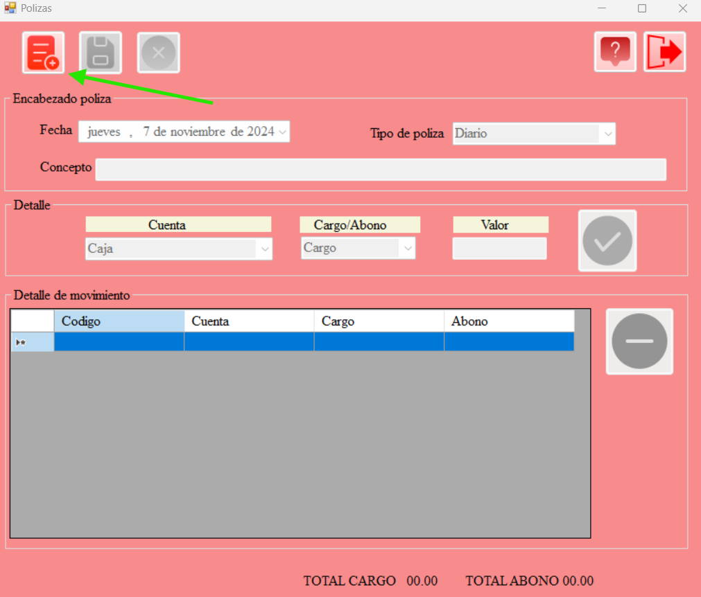
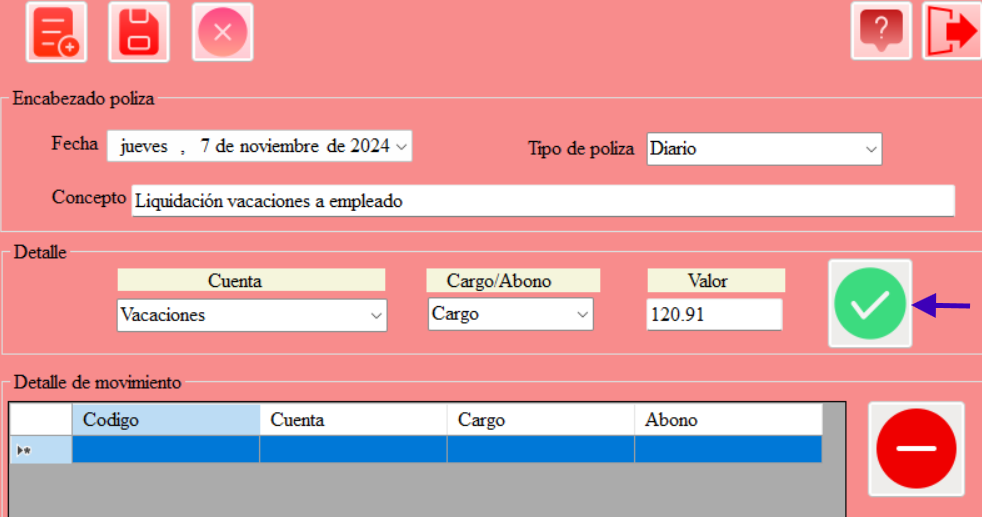
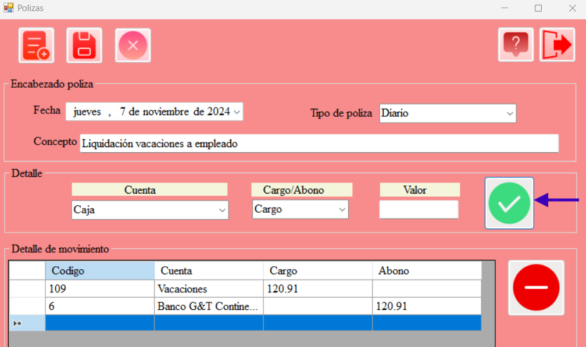

Para entrar al formulario dar clic en la pestaña Generación Procesos, seguido la opción Liquidaciones.

El formulario consta de los botones Guardar, Reportes, Ayuda, Cancelar y Salir.
Para calcular una nueva liquidación, se debe dar clic en el combobox, y escoger un empleado. En automático se calcularán y rellenarán todos los campos del formulario..
Para guardar una nueva liquidación, se debe dar clic en el botón Guardar.
Luego de oprimir el botón de Guardar, aparecerá el siguiente mensaje y la tabla que aparece en el formulario se actualizará automáticamente.
Para visualizar un reporte sobre las liquidaciones, oprimir el botón Reportes.
Para visualizar el documento de ayuda para el formulario de liquidaciones, oprimir el botón Ayuda.
Para limpiar todos los campos del formulario de liquidaciones, oprimir el botón Cancelar.
Para salir del formulario de liquidaciones, oprimir el botón Salir.
Para registrar las cantidades de la liquidación en Contabilidad, oprimir el botón señalado en imagen, para abrir el formulario de pólizas.
A continuación, se desplegará el formulario de pólizas, perteneciente al módulo de Contabilidad.
Para iniciar la creación de una nueva póliza, dar clic en el siguiente botón.
Para registrar, por ejemplo, la liquidación de vacaciones de un empleado, llenar los campos con los datos de la imagen.
En este caso, se está ingresando el "cargo".
La cantidad ingresada en el campo de "valor", es la cantidad que fue calculada en el formulario de liquidaciones.
Para registrar el cargo, dar clic en el botón verde.
Ahora para registrar el abono, llenar los campos con los datos de la imagen.
La cantidad ingresada en el campo de "valor", es la cantidad que fue calculada en el formulario de liquidaciones.
ATENCIÓN las cantidades del cargo y del abono deben coincidir.
Para registrar el abono, dar clic en el botón verde.
Para guardar la póliza, dar clic en el botón Guardar.